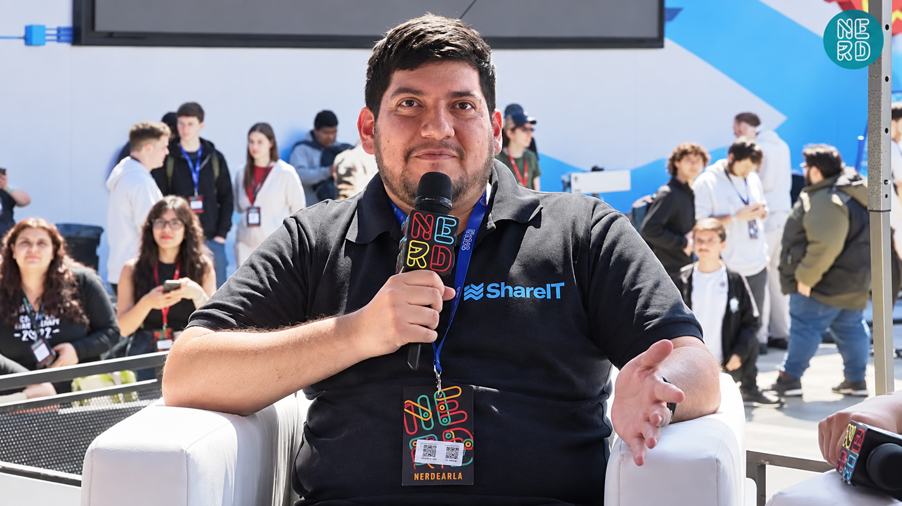

01
Estás empezando
Encontrá un lugar seguro para preguntar, aprender y dar tus primeros pasos.
COMUNIDAD TECNOLÓGICA, DE PERSONAS PARA PERSONAS
Si la tecnología es el lugar al que querés llegar, ShareIT es la gente que te acompaña a hacerlo.
“Nadie despega solo.”
LO DIJIMOS EN NERDEARLAUn espacio para personas que están construyendo su camino en tecnología, sin importar en qué parte del recorrido estén.
Encontrá un lugar seguro para preguntar, aprender y dar tus primeros pasos.
Intercambiá experiencias, herramientas y oportunidades con gente que está en la misma.
Multiplicá lo que sabés y dejá una huella real en el recorrido de alguien más.

UNA IDEA QUE NOS CONECTA
“La comunidad no es un lugar al que llegás. Es algo que construimos entre todos.”
— SHAREIT EN NERDEARLA 2026
Una charla corta sobre por qué creemos que crecer en tecnología se disfruta más cuando se hace acompañado.
ESTÁS INVITADO
Solo hace falta animarte a ser parte.
Quiero sumarme →